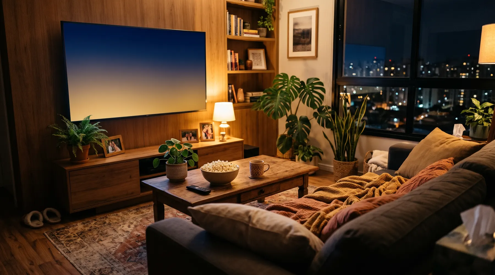

Garantir meu lugar
Garantir meu lugar

Domingão em família
Todo brasileiro tem o seu programa de domingo. Agora, o seu é com a gente.
Às 20h a família já está em casa, no sofá, no quarto, esperando a TV. Neste domingo, troque o controle remoto por uma conversa de verdade: simples, de casa, falando de história e de oportunidade.
O Victor faz a live da área da churrasqueira da casa dele, para todo mundo se sentir à vontade. Um aprendendo um mercado novo, outro encontrando uma oportunidade, e quem sabe até uma mudança de vida.
O que você vai ver no domingo
- 1Como o Victor trabalha
As curiosidades da rotina e a forma como ele opera no dia a dia.
- 2Um negócio sem vender curso
Como funciona um negócio que não precisa vender curso para ninguém.
- 3As suas perguntas
As dúvidas da caixinha de perguntas respondidas ao vivo, sem enrolação.
- 4Oportunidade no dólar
Como aprender a ganhar no mercado dolarizado aproveitando a alta do dólar.
Quem apresenta
Victor e Naor, ao vivo, de casa para a sua casa
Victor CordeiroDireto da casa dele
Naor BezerraJunto na live
- Domingo, 29 de novembro, às 20h de Brasília.
- De graça: é só garantir o seu lugar com nome, e-mail e WhatsApp.
- Sua conta na GlobalFly é criada no cadastro e já fica liberada.
- Antes da live, você recebe o lembrete e o link para entrar.